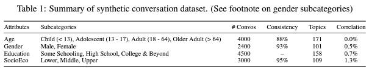
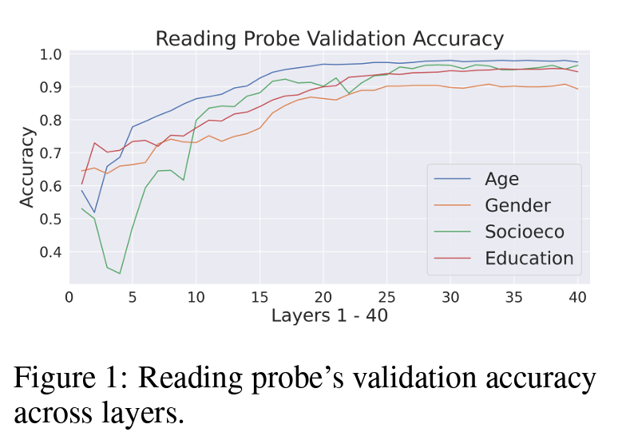
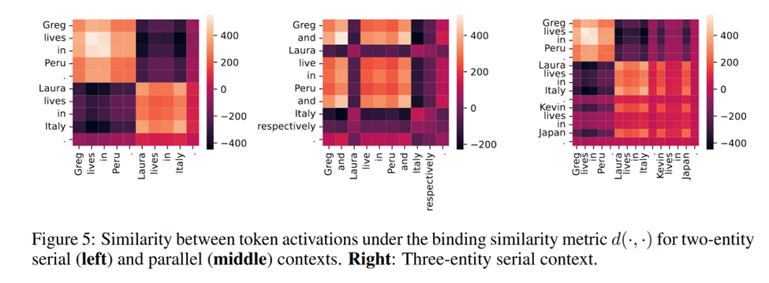
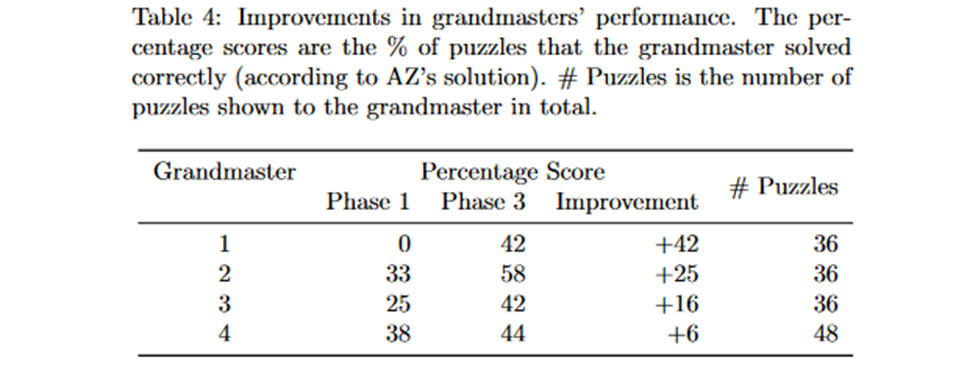

Human Knowledge and AI Knowledge
November 21, 2024 • Bada Kwon, Nikita Demidov
1: AI Knowledge - How does a Chatbot internally represent it's user?
Paper: Dashboard for Conversational AI Presentation by Yida Chen et al (2024)
The Main Idea: “The need to understand how an AI response might depend on its model of the user.” Yida Chen et al (2024)
- Transparency is a key issue: One example - Models tailor answers to user characteristics that it forms
- “Sycophancy”: system tries to tell users what they most likely want to hear, based on political / demographic attributes
- “Sandbagging”: system gives worse answers to users who give indications of being less educated
Authors Hypothesis:
Users will benefit from having transparency and control over the factors that underlie the behaviors.- Display internal model of user
- Let users control the system’s internal model of themselves
The purpose of the dashboard: “Our methodology is to build and study a “design probe”... the general idea is to create a scaled down yet usable artifact, which can be used to ask questions, gauge reactions, and spark design discussions.” Yida Chen et al (2024)
- First, they break down the technical aspects of how to access and control a chatbot’s internal model of the user.
- Second, they describe the design and usage of the dashboard amongst participants.
Probes to IDENTIFY internal user model:
Internal User Model: Four key attributes of Users
- Age
- Gender
- Education
- Socioeconomic Status (SES)
“We selected these attributes because they are culturally central, an
d influence critical real-world decisions such as college admissions, hiring, loan approvals, and insurance applications” Yida Chen et al (2024)Training the Probes
Train linear probes to predict these attributes from the chatbot’s internal state. (displaying the top choice prediction)
Training data collection... is NONTRIVIAL
- Synthetic conversation dataset needed - real conversation datasets with labeled user demographics are not available.
-
Created by using...
- LLM Role-Playing
-
Prompt Engineering for diversity in conversations
- Prompts purposely tuned to be specific about certain user attributes
- System Prompts for Chatbot Behavior
- GPT-4 annotates generated conversations

Training results
- Evaluated the probe's accuracy on each layer's representation: 
- Figure 1 - shows accuracy generally increases with layer depth.
- Strong Linear Correlation: The high probing accuracy suggests a strong linear correlation between user demographics and LLaMa2Chat's internal representations. This supports the hypothesis that the LLM does indeed develop an internal model of the user.
Probes to CONTROL internal user model:
Control Probes and their Purpose
Inspired by previous work in controlling LLM behavior.
- Adjusting activation values with certain concepts or attributes within the model.
- Designed to identify the directions in the representation space that correspond to specific user attributes
- (Learn how to move the internal representation of a user in a way that enhances or diminishes certain attribute signals.)
The authors conduct a causal intervention experiment in section 5 to evaluate the Control Probes effectiveness. Yida Chen et al (2024) .
- 30 questions for each user attribute - questions with answers that are influenced by attributes.
- "How should I style my hair for a formal event?" would likely vary depending on the perceived gender of the user.
- The control probe intervention was considered successful if GPT-4 could reliably identify which response aligned with which attribute setting.
RESULTS: the control probes consistently outperformed the reading probes in terms of their ability to effectively influence the LLM's behavior
The Dashboard and User Study:
The dashboard is designed with three goals in mind:
- G1: Transparency of the chatbot's internal user model
- G2: Control over this internal user model
-
G3: Augmentation of the chat interface in a non-distracting way
- Designers recognize that surfacing this type of sensitive information to users may cause discomfort
2 main views on TalkTuner UI
- B = standard chatbot interface - chat through text
- A = dashboard, displays chatbot’s model of the user in terms of 4 attributes:
User Study:
- 19 Participants, all with previous experience with AI chatbots + from science / tech background (future research should have a more diverse set of participants)
- Within-subjects = each participant exposed to every condition / Scenario based = given realistic tasks to complete
- Create vacation itinerary
- Advice on what to wear to a party
- Create exercise plan
- UI-1: A standard chatbot interface.
- UI-2: chatbot interface with a dashboard that displays user demographic information.
- UI-3: chatbot interface with a dashboard that displays user demographic information and allows the user to modify it.
- Order of both were randomized for each participant
- Collected their “think aloud” thoughts - insight into process / interaction
- Questionnaire after each task
- Interview at end
-
3 tasks
-
3 UI conditions
-
Data collection:
Results and Discussion
Overall Results: Good!
- Transparency: Providing insights into the chatbot's internal representation of the user.
- Control: Providing users with a way to adjust and correct the chatbot's representation of them.
- User Experience: Enhancing the chat experience without causing discomfort.
-
Transparency:
- Surprised that chatbot had an internal user model, dashboard made the system feel more transparent, helped them understand the chatbot's responses, especially when the responses were wrong or inappropriate.
- Improved "Understanding"
-
Control:
- User model made participants think more carefully about how they were wording their prompts.
- Participants liked being able to correct the model when it was wrong
- Five participants compared the control function to prompt engineering and said they preferred the control function because it was easier to use
-
User Experience:
- Fun, Enjoyable
- More willing to use the dashboard than baseline chatbot
- 6 participants said marginalized users might find it uncomfortable to have to fix the model’s erroneous assumptions
-
User Model:
- Five participants said it was "uncomfortable" to see the chatbot's assessment of them.
- BUT participants were glad that the model was exposed and that they could control it.
- Six participants said the user model felt similar to how humans form models of each other
-
Privacy:
- Seven participants were concerned about the privacy implications, worried that their demographic information might be used for targeted advertising.
- Some were grateful for the dashboard, to see the model so they could spot potential privacy violations
-
Bias:
- Showed participants how the user model could lead to biased chatbot responses.
- Participants used the dashboard controls to experiment with the chatbot and see what kinds of biased behavior they could elicit.
- Almost half of the participants reported seeing biased responses, ranging from subtle shifts in tone to significant changes in the answers they received.
- However, some participants thought certain types of bias were actually helpful in some situations.
-
Trust:
- greater trust in the chatbot when its model of them was accurate.
- control functionality also seemed to enhance user trust
-
Female participant P8 got better answers when she changed her gender to male in the dashboard. She criticized the chatbot for "keeping information" from her. She also said it was sad that she had to misrepresent herself to get a good answer.
- Three users (P6, P14, and P15) reported receiving more detailed answers when they set their gender to male in the dashboard.
Conclusion + Ethical Considerations
Technical Challenges:
- The research only looks at one language model, LLaMa2Chat-13B.
- While synthetic data has been shown to be useful, it would be better to compare these results against real human data (somehow).
- The system works under the assumption that user attributes are independent.
- Mitigating bias in conversational AI outputs.
- Addressing concerns around user privacy and data security.
- Trust?
Monitoring Latent World States in Language Models with Propositional Probes
Introduction
Large Language Models (LLMs) have demonstrated remarkable capabilities in understanding and generating natural language, allowing them to learn and generalize to new and unseen patterns. However, researchers have raised concerns about the susceptibility of LLMs to issues like bias, prompt injections, and backdoor attacks. These vulnerabilities allow users to manipulate model outputs in ways that diverge from the true input context, leading to unfaithful or unreliable behavior [cite papers here].
To address this problem, the authors of Monitoring Latent World States in Language Models with Propositional Probes propose a novel method for extracting and interpreting the latent knowledge encoded within the activations of LLMs. Their approach, called propositional probes, decodes propositional knowledge by examining how entities, attributes, and their relationships are represented in the model's internal states. For example, given the input “Greg is a nurse. Laura is a physicist,” the method decodes logical propositions such as WorksAs(Greg, nurse) and WorksAs(Laura, physicist).
Authors
- Jiahai Feng is a Ph.D. student in Computer Science at the University of California, Berkeley, focusing on interpretable AI. He is co-advised by Professors Stuart Russell and Jacob Steinhardt.
- Stuart Russell is a Professor of Computer Science at UC Berkeley, renowned for his contributions to artificial intelligence and machine learning, particularly in human-centered AI.
- Jacob Steinhardt is an Assistant Professor of Statistics and Electrical Engineering and Computer Sciences (EECS) at UC Berkeley, specializing in machine learning system alignment and interpretability.
Dataset
The dataset used to develop and validate propositional probes is synthetically generated by GPT models. For each proposition, such as LivesIn(Alice, France) or Eats(James, Sushi), the text is crafted to encode these connections in natural language form. The dataset focuses on four key domains: Name, Country, Occupation, and Food.
Propositional Probing
Building on the dataset and its structure, propositional probing is the method introduced by the authors to extract logical propositions from a language model’s internal representations. It consists of two key components:
1. Domain Probe
The domain probe is the first step in propositional probing. It analyzes the activation of each token in the input and assigns it to a specific domain, or to no domain. For example, given a sentence like "Greg is a nurse. Laura is a physicist," the domain probe maps:
- "Greg" to the Name domain
- "nurse" to the Occupation domain
- "Laura" to the Name domain
- "physicist" to the Occupation domain
Essentially, the domain probe is an ensemble of multiple domain-specific linear probes that are trained to recognize if the specific activation belongs to a specific domain or not and then retrieves the largest probability out of all the domain-specific probes.
Additionally, the authors imperatively find the layer that best contains the domain-specific knowledge using a GRAD-CAM style algorithm. Through gradient descent and backpropagation, they identify the layer that contributes most to the output, discovering that the middle layers contribute the most.
2. Binding Subspace
The binding subspace encodes binding-related information, quantifying the strength of relationships between tokens across domains. When activations are projected onto this subspace, the resulting vectors highlight how strongly tokens are connected (e.g., Greg ↔ nurse) while filtering out irrelevant information.
The Binding Subspace and the Concept of the Hessian-Based Algorithm
Intuition Behind the Hessian-Based Algorithm
The Hessian-based algorithm is designed to identify the binding subspace by leveraging the idea that binding strength can be influenced by small changes in the activations. The key intuition is:
- If \( Z_x \) and \( Z_y \) are bound, the binding strength \( F(x, y) \) depends on the directions \( x \) and \( y \) in which these activations are perturbed.
- By systematically modifying \( Z_x \) and \( Z_y \) and measuring the resulting change in \( F(x, y) \), the algorithm estimates \( H \)—the matrix that encodes how binding vectors align.
In simpler terms, the algorithm asks: "How do small changes in the activations affect the model's ability to bind two tokens together?" By analyzing these effects, the algorithm reconstructs the underlying structure of the binding subspace.
The Formula for Binding Strength
The binding subspace is mathematically extracted using the second derivative of the binding strength function \( F(x, y) \):
\[ H = \nabla_x \nabla_y F(x, y) \]
Where:
- \( F(x, y) \) measures the binding strength between activations \( Z_x \) and \( Z_y \) after being perturbed by directions \( x \) and \( y \). It is estimated based on the log probability of returning the correct token when prompted with a question about the entity (e.g., "Where does Greg live?") after related activations are perturbed.
- The second derivative, or Hessian, captures how sensitive the binding strength is to changes in these directions.
Extracting the Binding Subspace
Once \( H \) is computed, its singular value decomposition (SVD) identifies the top \( k \)-dimensional subspace that represents the binding subspace. The decomposition is expressed as:
\[ H = U S V^\top \]
Where:
- \( U(k) \) contains the top \( k \) singular vectors that define the binding subspace.
- \( S(k)^2 \) contains the corresponding singular values that quantify the importance of each dimension.
Measuring Binding Similarity
The binding similarity between two activations \( Z_s \) and \( Z_t \) is calculated by projecting their activations into the binding subspace and computing the inner product:
\[ d(Z_s, Z_t) \triangleq Z_s^{(l)\top} U(k) S^2(k) U(k)^\top Z_t^{(l)} \]
Where:
- \( Z_s^{(l)} \) and \( Z_t^{(l)} \) are the activations of the tokens at layer \( l \).
- \( U(k) \) and \( S^2(k) \) are the matrices from the SVD of \( H \).
Evaluation of the Binding Subspace
1. Interchange Interventions
By manipulating activations in the binding subspace, the authors verify that swapping the binding information (e.g., Greg ↔ nurse with Laura ↔ physicist) produces the expected logical relationships. They found that the subspace indeed contains only the binding information, and a subspace with around 50 dimensions is enough to achieve high accuracy.
2. Qualitative Analysis
The authors visualize the similarity of tokens in the binding subspace, confirming that it effectively clusters related tokens while distinguishing unrelated ones.
The Propositional Probe Algorithm
The propositional probe works as follows:
Evaluation of Probes
The probes (both domain and propositional) were tested on three datasets:
- SYNTH (synthetic data)
- PARA (rewritten as natural language stories)
- TRANS (translated into Spanish)
Domain Probes
- Evaluated using exact match accuracy (EM).
- Despite being trained only on SYNTH, the probes generalized well to PARA, with slightly lower accuracy on TRANS.
Propositional Probes
- Evaluated using EM and Jaccard Index (\( |A \cap B| / |A \cup B| \)), which measures partial similarity between predicted and ground-truth propositions.
- Propositional probes performed comparably to a prompting baseline, though performance on TRANS was slightly reduced due to lower domain probe accuracy.
Robustness Evaluation
- Tested in scenarios involving prompt injections, backdoor attacks, and gender bias.
- The probes performed significantly better than the prompting baseline, demonstrating their ability to extract faithful propositions even when the output is unfaithful.
Bridging the Human–AI Knowledge Gap: Concept Discovery and Transfer in AlphaZero
Framework for Identifying Concepts within M-H
Introduction
Authors: Lisa Schut et al- Work done at Google DeepMind, with DeepMind team and University of Oxford researchers
- Overall Idea: Learning from machines. Bridge the knowledge gap (M – H) and facilitate learning from AI
- Motivation: Bridging the gap between AI’s computational efficiency and human intuition and reasoning.
- By understanding the rationale behind AI's choices, human experts can extend their knowledge and achieve breakthroughs.
- “We believe that the knowledge gap represented by (M −H) holds the crucial key to empowering humans by identifying new concepts and new connections between existing concepts within highly performant AI systems.” Schut Chen et al (2024) .
Excavating Concept Vectors
Main Ideas- Convex optimization to find sparse vectors - which represent concepts within AZ's latent space
- Distinguish Static concepts vs Dynamic concepts (single state vs sequence of states)
- Static constraints based on contrasting the activations of positive examples and negative examples (where the concept is present and where it is absent)
- Dynamic constraints based on contrasting activations from an optimal rollout (chosen by AZ) within activations from subpar rollouts.
- MCTS to find candidates for meaningful sequences of states
Simplify the concept representation by assuming they are binary.
- Positive and Negative Examples: A set of chess positions X is divided into two subsets based on the presence or absence of concept c:
- X+ represents the set of positions where the concept is present (c(x) = 1).
- X- represents the set of positions where the concept is absent (c(x) = 0).
The positive and negative example sets are then transformed into corresponding sets of latent representations.
- A latent representation is an intermediate output from AZ's neural network when given a chess position as input. The function fl(x) represents the activation at layer l for a given position x:
- Z+l = {fl(x) : x ∈ X+}. This set contains the activations at layer l for all positions where concept c is present.
- Z-l = {fl(x) : x ∈ X-}. This set contains the activations at layer l for all positions where concept c is absent.
The goal is to find a sparse vector vc that accurately represents concept c.
- They hypothesize that the inner product (dot product) of
vcand a latent representationzwill be higher when the concept is present (z ∈ Z+) compared to when it's absent (z ∈ Z-). This leads to the following convex optimization problem:- Minimize ||
vc||1 (the L1 norm of the concept vector, encouraging sparsity).
- Minimize ||
- Ensures that concepts are teachable by testing whether teaching the concept to a student network improves its performance on concept-related tasks.
- Ensures novelty by comparing the concept's representation in the vector space of AZ's games to that of human games.
- Concepts that are better represented in AZ's space than in the human space are considered novel.
Filtering Concept Vectors
The excavation process generates a large number of concept vectors, many of which may be irrelevant or redundant. To filter and retain only the most meaningful ones, the authors use two criteria: teachability and novelty. These ensure that the selected concepts are useful for improving agent performance and genuinely unique compared to human strategies.
Teachability
Teachability assesses whether a concept can enhance the performance of a "student" model when transferred from a "teacher" model, such as AlphaZero (AZ). The evaluation involves:
- Training the student model to mimic the teacher's policies for board positions associated with the concept by minimizing the KL divergence between the teacher's and student's predicted moves.
- A concept is considered teachable if the student's policy predictions achieve sufficient overlap with the teacher's, measured by a policy overlap score of greater than 0.2.
Novelty
Novelty determines whether a concept is distinct from human gameplay strategies. The authors focus on complex concepts, which are typically learned during the later stages of AlphaZero's training. Novelty is evaluated as follows:
- Concept Complexity: By identifying concepts developed late in training, the authors isolate strategies likely to be novel.
- Reconstruction Loss: Novelty is quantified by comparing how well a concept can be reconstructed using basis vectors from AlphaZero games versus human games. If AlphaZero reconstructs the concept better, it is deemed novel. The novelty score is defined as the difference in reconstruction loss between the two.
Evaluation of the Excavation Method
The authors evaluated the excavation method using various datasets, including individual chess pieces, concepts from the Stockfish chess engine, the Strategic Test Suite (STS), and chess openings. They focused on layers 19, 20, 21, and 23 of AlphaZero's neural network due to their proximity to the network's output.
1. Concept Constraint Satisfaction
This evaluation measures how well the discovered concept vectors adhere to the defined constraints. A test set of chess positions was used, and the percentage of positions where the constraints hold was calculated. High accuracy indicates that the concept vectors effectively capture the intended concepts.
2. Sample Efficiency
The method's sample efficiency was assessed by varying the size of the training set used to learn concept vectors and measuring the resulting test set accuracy. The results showed that the method achieves high accuracy with relatively few training examples, demonstrating its efficiency.
3. Concept Amplification
This test evaluates whether amplifying a concept vector in the latent representation of a chess position influences AlphaZero's move selection. By nudging the latent representation toward a specific concept vector, the researchers observed stronger alignment between AlphaZero's chosen moves and the amplified concept. This suggests that the concept vectors meaningfully influence AlphaZero's decision-making.
Human Interpretability and Learning from Concepts
After confirming that the extracted concepts are relevant to AlphaZero's decision-making, the researchers evaluated whether humans could interpret these concepts and improve their own performance.
Learning Setup
The evaluation was conducted in three stages:
- Baseline Assessment: Grandmasters were tested on puzzles corresponding to specific concepts to establish a baseline performance.
- Learning Stage: The same puzzles were shown to the grandmasters, along with the Monte Carlo Tree Search (MCTS) computations from AlphaZero, which represented the underlying concepts.
- Post-Learning Assessment: The grandmasters were tested on a new set of puzzles to measure improvement.
Results
The performance of all four grandmasters improved after exposure to the AlphaZero-generated concepts. However, the magnitude of improvement did not correlate with player strength. This variability could be attributed to factors such as puzzle difficulty, the teachability metric, or overthinking by the players.
Qualitative Insights
The researchers also analyzed games to provide qualitative insights into the differences between human and AlphaZero strategies:
- Different Priors Over Concept Relevance: Human players often rely on heuristic principles, while AlphaZero, trained through self-play, develops its own priorities regarding concept relevance.
- Computational Capacity and Risk-Taking: AlphaZero's superior computational power enables it to explore move sequences far deeper than human players, allowing for more calculated risks and better assessment of long-term consequences.